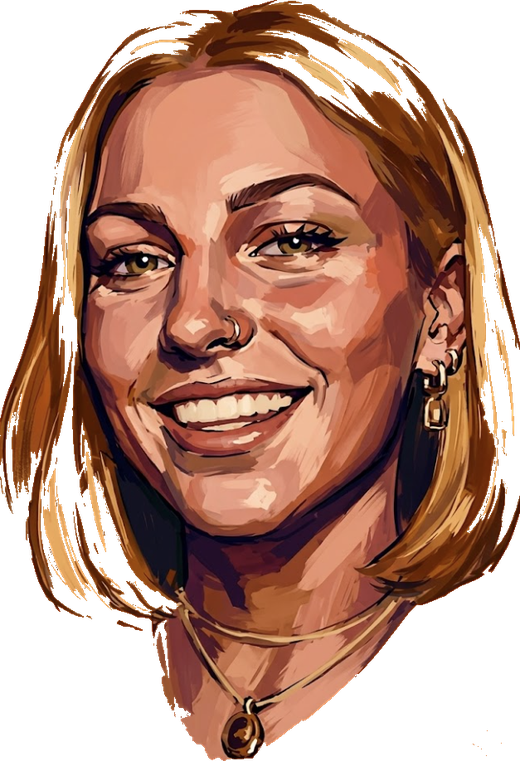

Sono una project & business developer che lavora all'intersezione tra persone, strategia e tecnologia.I'm a project & business developer working at the intersection of people, strategy and technology.
Vengo da una formazione umanistica 📚 e ci ho aggiunto project management, innovazione e una bella dose di intelligenza artificiale 🤖.I come from a humanities background 📚 and added project management, innovation and a solid dose of artificial intelligence 🤖.
Il mio lavoro? Tradurre la complessità tecnologica in valore reale, allineando le persone e gli obiettivi di business. 🌍My job? Translating technological complexity into real value, aligning people and business goals. 🌍
Viviamo nell'era della tecnologia diffusa. A fare la differenza, oggi, è la visione d'insieme. We live in an era of widespread technology. What makes the difference today is the big picture.
La capacità di unire competenze multidisciplinari per trasformare le idee in soluzioni concrete. The ability to unite multidisciplinary skills to turn ideas into concrete solutions.
Un percorso in continua evoluzione. Esplora le macro-aree per scoprire il mio background, le competenze tecniche e il mio approccio ai progetti.An evolving journey. Explore the macro-areas to discover my background, technical skills, and approach to projects.
Progetti, collaborazioni, idee. Rispondo davvero.Projects, collaborations, ideas. I actually reply.